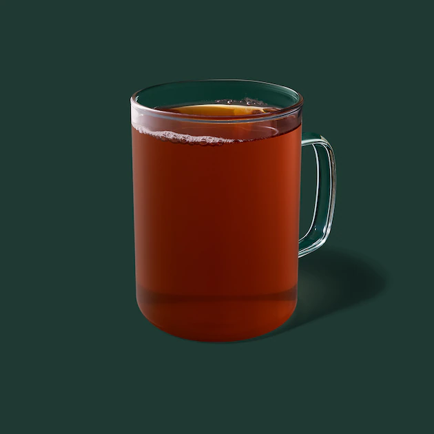
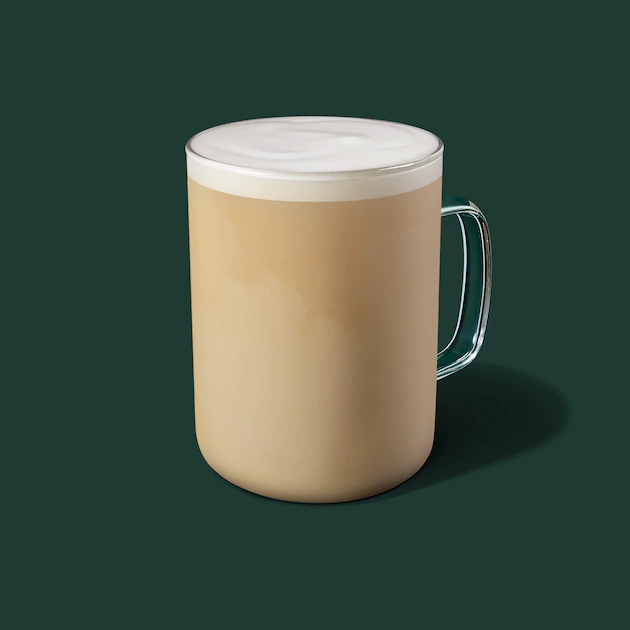
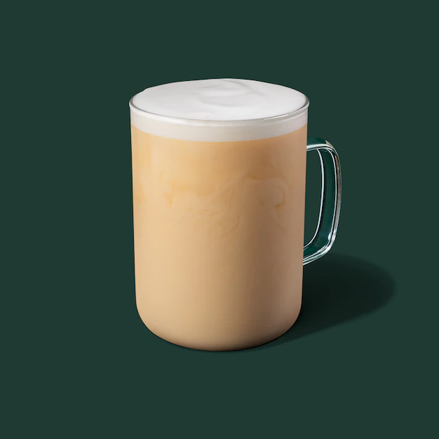

|
Earl Grey Tea

We take a strong black tea base and add the essence of bergamot, a citrus fruit with subtle lemon and floral lavender notes, to create this aromatically awesome tea flavor. |
London Fog Tea Latte

Bright, citrusy spark of Italian bergamot blends with subtle hints of lavender, vanilla syrup, and steamed milk for this frothy reinvention of classic Earl Grey tea. |
Royal English Breakfast Tea Latte

A select blend of rich, full-leaf black teas from India and Sri Lanka sweetened with liquid cane sugar and topped with steamed milk and a velvety foam. Each and every sip—smooth and silky. |